Alison Booth
Peacock, Virginia Tatnall. Famous American Belles of the Nineteenth Century. Illustrated. Philadelphia and London: Lippincott, 1900; 1901.
TOC: Marcia Burns (Mrs. John Peter Van Ness.); Theodosia Burr (Mrs. Joseph Alston); Elizabeth Patterson (Madame Jerome Bonaparte); The Caton Sisters; Margaret O'Neill (Mrs. John H. Eaton); Cora Livingston (Mrs. Thomas Pennant Barton); Emily Marshall (Mrs. William Foster Otis); Octavia Walton (Madame Le Vert); Fanny Taylor (Mrs. Thomas Harding Ellis); Jessie Benton (Mrs. John C. Frémont); Sallie Ward (Mrs. George F. Downs); Harriet Lane (Mrs. Henry Elliott Johnston); Adèle Cutts (Mrs. Robert Williams); Emilie Schaumburg (Mrs. Hughes-Hallett); Kate Chase (Mrs. William Spague); Mattie Ould (Mrs. Oliver Schoolcraft); Jennie Jerome (Lady Randolph Churchill); Nellie Hazeltine (Mrs. Frederick W. Paramore); Mary Victoria Leiter (Baroness Curzon of Keldeston); New York as a Social Centre.
Illustrated chapters on nineteen 19th-c. women “of so pre-eminent a beauty, so dazzling a wit, so powerful a magnetism, that their names belong no less to the history of their country than those of the men whose genius has raised it to the rank it holds to-day among the nations of the earth.” Peacock believes the "highest type" of "political and...social genius" stamp an impression "of thei remarkable personalities upon their time." Her examples demonstrate that in America it was possible to rise to eminence, even in the 19th c. with limited travel and poor communication (before the telegraph). Her examples are chosen for fame "beyond question" and because they "represent their period and locality." The aim is to “recognize the power of a queenly personality”; the hope is that the 20th c. will “‘perpetuate the empire which beauty first established.’” Preface dated Paris June 22, 1900. Final chapter: "New York as Social Centre."
-
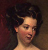Famous American Belles of the Nineteenth Century
-
FromminiaturebyJamesPeale,1797.jpg) Marcia Burns (Mrs. John Peter Van Ness)
Marcia Burns (Mrs. John Peter Van Ness) -
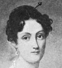Elizabeth Patterson (Madame Jerome Bonaparte)
-
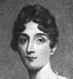Mary Caton (Lady Wellesley)
-
Fromminiaturebyherself.jpg) Cora Livingston (Mrs. Thomas Pennant Barton)
Cora Livingston (Mrs. Thomas Pennant Barton) -
.jpg) Octavia Walton (Madame LeVert)
Octavia Walton (Madame LeVert) -
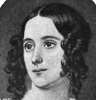Sally Chevalier (Mrs. Abram Warwick) By Thomas Sully
-
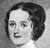Sallie Ward (Mrs.George F. Downs) From a miniature
-
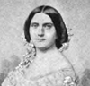Harriet Lane (Mrs. Henry Elliott Johnston)
-
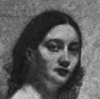Adele Cutts (Mrs. Robert Williams)
-
FromportraitbyWaugh.jpg) Emilie Schaumburg (Mrs. Hughes-Hallett)
Emilie Schaumburg (Mrs. Hughes-Hallett) -
FromphotographbyJuliusUlke.jpg) Kate Chase (Mrs. William Sprague)
Kate Chase (Mrs. William Sprague) -
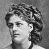Mattie Ould (Mrs. Oliver Schoolcraft)
-
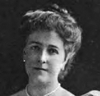Lizzie Cabell (Mrs. Albert Ritchie
-
FromphotographbyRosetti.jpg) Mary Triplett (Mrs. Philip Haxall)
Mary Triplett (Mrs. Philip Haxall) -
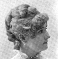Nellie Hazeltine (Mrs. Frederick W. Paramore)
-
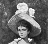Jennie Chamberlain (Lady Naylor-Leyland)
-
FromphotographbyC.M.Bell.jpg) Mattie Mitchell (Duchesse de Rochefoucald)
Mattie Mitchell (Duchesse de Rochefoucald) -
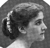Mary Victoria Leiter (Baroness Curzon of Kedleston)
-
 Miss May Handy
Miss May Handy -
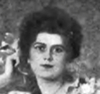Catherine Duer (Mrs. Clarence MacKay
Search OCLC WorldCat for this title.
Search Google Books for this title.